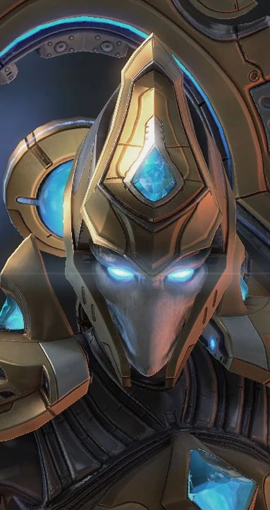

Адепт
| Адепт | |
|  | |
| Информация о юните | |
| Тип: | Наземная боевая единица |
| Описание: | Специалист дальнего боя. Может использовать псионический перенос. |
| Построен из: | Врата |
| Требование: | Кибернетическое ядро |
| Стоимость: |  100 100  25 25  30 30  2 2 |
| Горячие клавиши: | H |
| Атака:Глеф-пушка | |
| Цели: | Земля |
| Урон | 10(+1) |
| DPS: | 6.2(+0.62) |
| Перезарядка: | 1.61(-0.5) |
| Бонус: | +12(+1) против легкой пехоты |
| Ранг: | 4 |
| Статистика юнита | |
| Защита: |  70 70  70 70  1 (+1) 1 (+1) |
| Атрибуты: | Легкий, биологический |
| Зрение: | 9 |
| Скорость: | 3.5 |
| Размер груза: | 2 |
| Силен против: | Зерглинг Зилот Морпех |
| Слаб против: | Таракан Сталкер Мародер |
Адепт - офицерский класс пехоты, высококвалифицированные полевые командиры, которые служат специалистами дальнего боя. Адепты специализируются на борьбе с легкобронированными угрозами. Они имеют легкую броню, поскольку адепты отдают предпочтение скорости, а не защите. Вооруженные глефовыми пушками и псионическими усилителями, адепты также хорошо разбираются в псионической передаче. Их ловкость и утонченность сделали их центральными фигурами в армии очистителей и среди многих сил протоссов.
История
Адепты изначально были задуманы Иерархом Артанисом для замены бывших лидеров Касты Судей Тамплиерами. К 2505 году они были недавним дополнением к арсеналу Дэлаама, и разведка Доминиона недавно узнала об их существовании, а Корпус морской пехоты Доминиона обладал небольшим боевым опытом против них. Они были обозначены как основные цели в случае любого враждебного столкновения.
Адепты были развернуты во время Конца Войны, когда группы тамплиеров добровольно взяли на вооружение боеприпасы «Очиститель», усовершенствованные фазовым кузнецом Караксом. Это оружие позволило тамплиерам усилить свой псионический потенциал и спроецировать свой разум для телепортации, ослабляя при этом своих врагов. Адепты продолжали использовать Дэлаамы, но так и не смогли достичь оптимальных характеристик оригинальных прототипов Каракса.
После окончания войны культурные тенденции, восходящие к Золотому веку экспансии внутри касты тамплиеров, побудили некоторых адептов носить церемониальные доспехи той эпохи. Ихан-рии использовали адептов в своем арсенале и держали многих в глубоком стазисе на окраинах сектора Копрулу.